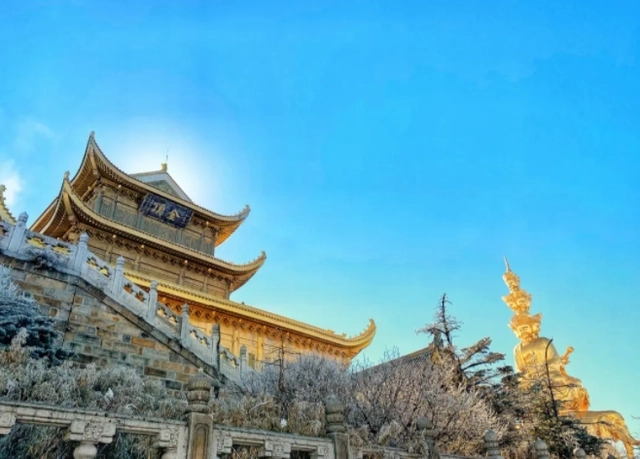

中国世界自然、文化遗产
泰山
泰山是中国著名的五岳之一，是世界自然与文化遗产、世界地质公园、国家重点风景名胜区、全国文明风景旅游区。泰山自古以来就被视为“直通帝座”的天堂，成为百姓崇拜，帝王告祭的神山，有“泰山安，四海皆安"的说法。东岳泰山主峰海拔1545m，山势磅礴，有“拔地通天”之势、“擎天捧日”之姿；同时，还有着数千年精神文化的渗透和渲染以及人文景观的烘托，被誉为露天的历史、艺术博物馆。
黄山
黄山风景区位于安徽省南部黄山市境内，它与长江、长城、黄河同为中华壮丽山河和灿烂文化的杰出代表，被世人誉为“人间仙境”、“天下第一奇山”，素以奇松、怪石、云海、温泉、冬雪“五绝”著称于世。历来享有“五岳归来不看山，黄山归来不看岳”的美誉。黄山境内群峰竞秀，有千米以上高峰88座；其中莲花”、“光明顶”、“天都”为三大主峰，海拔均逾1800米。
武夷山
武夷山，是中国著名的风景旅游区和避暑胜地，属典型的丹霞地貌，素有“碧水丹山”、“奇秀甲东南”之美誉。 然景观与人文景观的有机结合是武夷山风景区的一大特色，而以天游-桃源洞景区尤为突出，堪称人与自然完美结合的典范，区内幽静的环境、秀丽的风光吸引了历史上文人雅士纷纷在这里游览、隐居、著述、讲学，留下了数十处书院、寺庙遗址和百余方摩崖石刻。
峨眉山-乐山
世界文化与自然双重遗产峨眉山-乐山大佛是由峨眉山和乐山大佛组成，以其特殊的地理位置，雄秀神奇的自然景观，典型的地质地貌，保护完好的生态环境，特别是地处世界生物区系的结合和过渡地带，拥有丰富的动植物资源，具有明显的区域性特点，珍稀濒危物种繁多，创造和积累了以佛教为主要特征的丰富文化遗产。峨眉山-乐山风景名胜区于1996年12月6日列入《世界自然与文化遗产名录》。